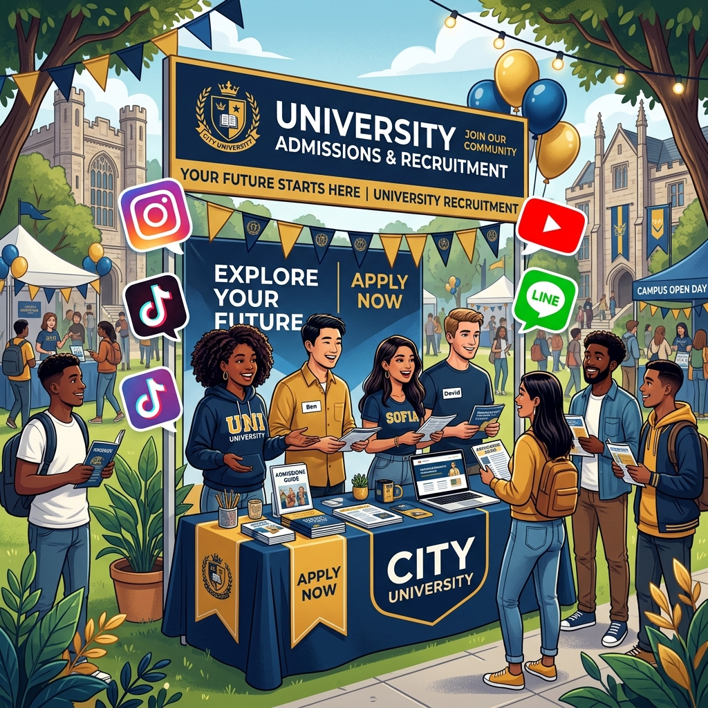
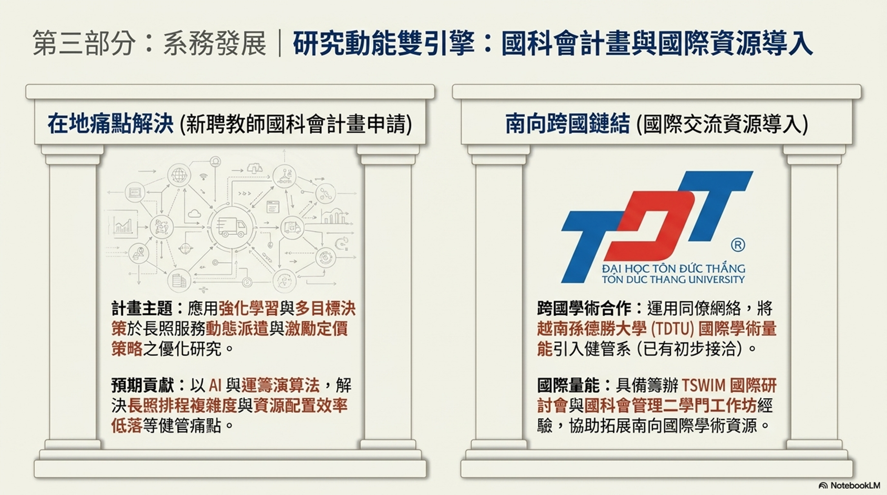
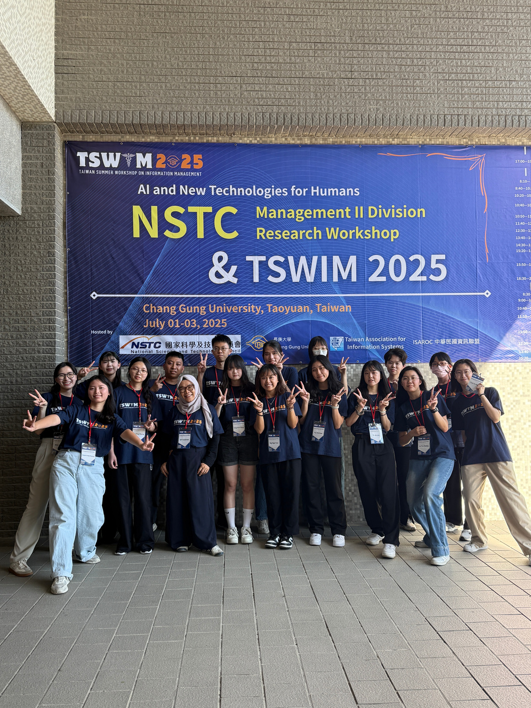
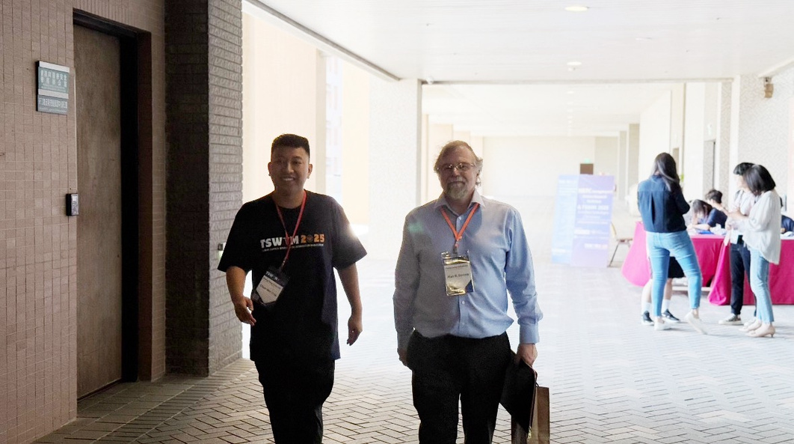
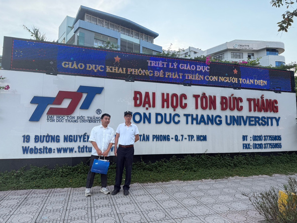
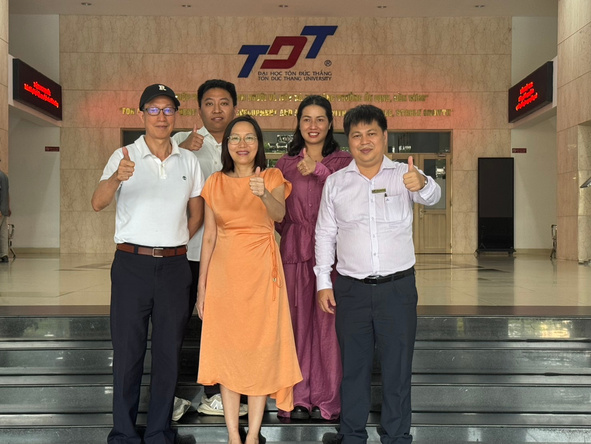

Integrating the unique strengths of the Department of Business Administration at Vanung University (two core modules, paid internships, and state-of-the-art AI labs) with my technical background, deploying AI Agents to innovate admissions.
Our promotional efforts will focus on highlighting these four core departmental highlights:

Visits local high schools around Taoyuan, Hsinchu, and Miaoli. Presents the theme "VNU BA x Paid Internship x Certification". Builds face-to-face trust by showing how curriculum translates into real earnings.
Sets up booths featuring "AI Smart Commerce Simulations." Increases engagement by hosting mini-competitions and showcasing student internship success stories.
Designs collaborative curriculum alignments and elective courses with high schools, embedding real-world cases (e.g. AI tools, e-commerce ops) to build a stable pipeline of enrolled students.
Conducts warm follow-ups with candidates, guiding them and their parents to join official LINE groups for real-time consultation. Hosts parent visits to the AI Lab to address doubts and boost registration.
Organizes summer and winter camps for high schoolers, letting them gain hands-on experience in our AI Smart Business Innovation Lab, demonstrating the modern appeal of VNU BA.
Deploys a 24/7 LINE AI Agent. Built on LLMs, it precisely answers candidates about channels, thresholds, course modules, internships, and scholarships. Guides interested candidates to leave contacts for departmental follow-up.
Leverages AI tools to analyze social interests and behavior tags of local high schoolers, delivering targeted campaigns via Meta and Google Ads, boosting the visibility of VNU BA advantages.
Employs AI tools to generate engaging scripts for TikTok and IG Reels (e.g. "A Day in the Life of a VNU BA Student", "Unboxing the AI Lab"), creating relatable short-form content matching Z-generation trends.
Deploys automated agents to draft personalized newsletters and invitation cards targeting high school advisors and candidates, maintaining routine engagement to enhance VNU BA's reputation.
Builds an admissions CRM tracking dashboard, measuring conversion rates of visits, digital ads, LINE queries, and workshops to adjust budgets dynamically.
System Deployment & Material Planning
High School Visits & Community Operations
Classroom Visits & Precision Ad Spending
Data Analytics & Strategic Tuning
Actively leveraging existing peer networks to bring the international academic capabilities of the renowned Vietnamese institution, Tôn Đức Thắng University (TDTU), into the Department of Business Administration at Vanung University (preliminary contacts have been established). Future works will focus on co-authored research, teacher exchanges, and international student recruitment.
Possesses solid experience in organizing international academic events. Actively served in organizing the TSWIM International Conference (Taiwan Summer Workshop on Information Management) and the NSTC Management II Division Research Workshop. Ready to assist the department in securing international cooperation grants and expanding southbound academic resources.

Tôn Đức Thắng University (TDTU) Exchange



Fig: TSWIM Conference organization & TDTU international collaboration photos